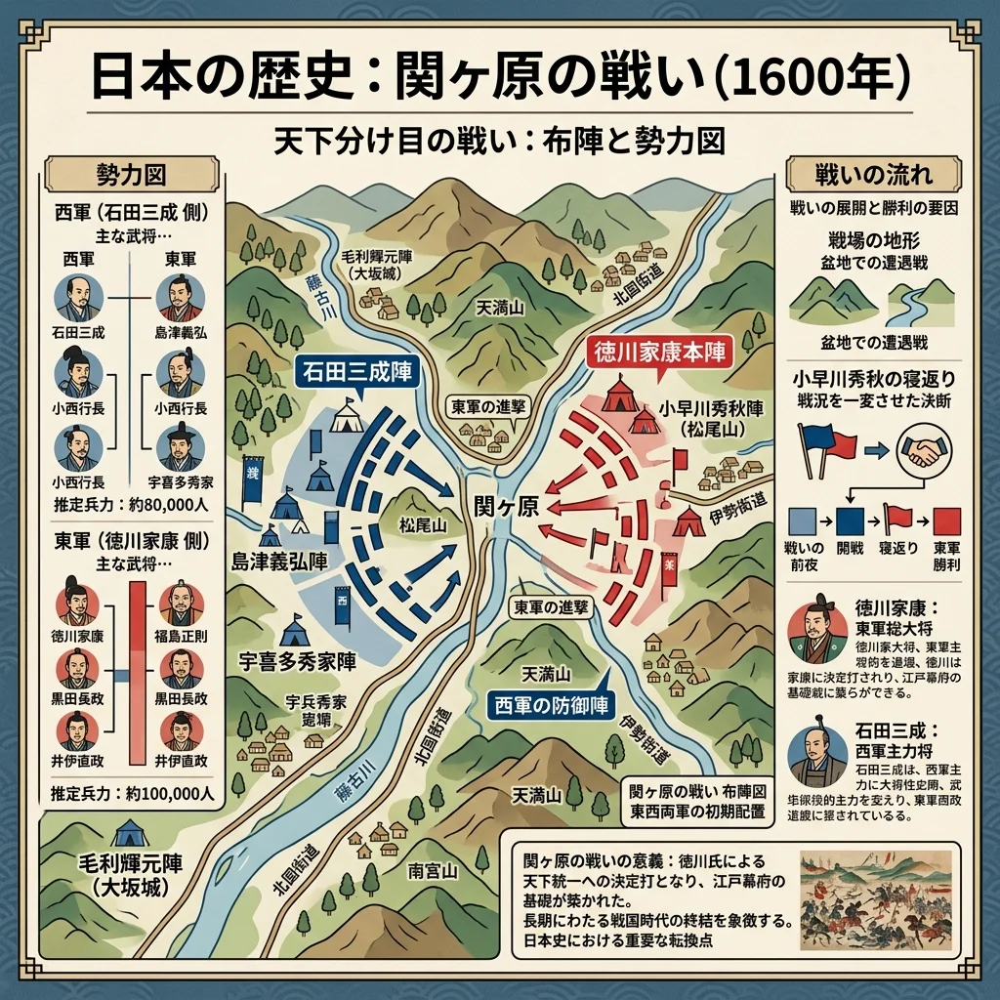
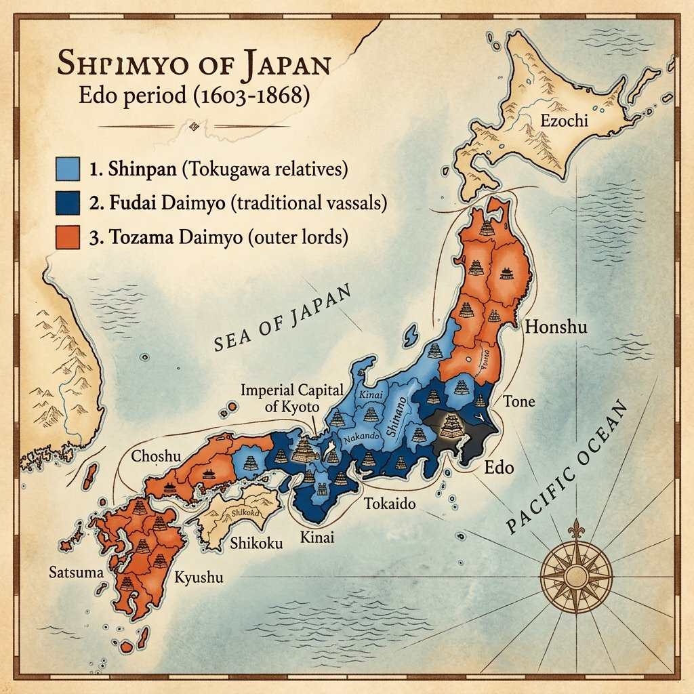

16. 江戸幕府の成立と支配の仕組み
豊臣秀吉の死後、天下の覇権をめぐって再び日本は二分されました。これを勝ち抜いた徳川家康が開いた「江戸幕府」は、その後約260年もの間、戦争のない平和な時代を維持することになります。今回は、江戸幕府がどのようにして大名や農民を厳しくコントロールし、長期政権の土台を築き上げたのかを解説します！
1. 関ヶ原の戦いと江戸幕府の成立
豊臣秀吉が亡くなると、五大老の中で実力No.1であった徳川家康（とくがわいえやす）と、豊臣家を守ろうとする石田三成（いしだみつなり）らの対立が激しくなりました。
① 関ヶ原の戦い（1600年）
1600年、美濃（岐阜県）の関ヶ原で、徳川家康率いる「東軍」と、石田三成率いる「西軍」が激突しました。この戦いは「天下分け目の戦い」と呼ばれ、全国の大名が二手に分かれて戦いましたが、西軍側の裏切りなどもあり、わずか1日で東軍（家康側）が大勝利を収めました。
② 江戸幕府の誕生と豊臣氏の滅亡
関ヶ原の戦いに勝利した徳川家康は、1603年に朝廷から征夷大将軍に任命され、江戸（東京）に幕府を開きました。家康はその後、大坂冬の陣・夏の陣（1614、1615年）において、大坂城に拠る豊臣秀頼らを滅ぼし、国内に徳川氏の絶対的な支配権を示しました。

図1：天下の覇権をめぐって東軍と西軍が激突した「関ヶ原の戦い」のイメージ
2. 大名を支配する仕組み（幕藩体制）
江戸幕府は、将軍が直接支配する土地（幕領）のほかに、各地の土地を大名に支配させました。大名が支配する地域や組織を藩（はん）と呼び、この幕府と藩が協力して日本全国を支配する体制を幕藩体制（ばくはんたいせい）と呼びます。大名に対しては、以下の厳しい「アメとムチ」の政策を行いました。
① 大名の配置（親藩・譜代・外様）
幕府は、大名を徳川家との親密度（信頼度）に応じて3種類に分類し、謀反を防ぐために配置を厳しく工夫しました。
- 親藩（しんぱん）：徳川氏の一族（御三家である尾張・紀伊・水戸など）。
- 譜代大名（ふだいだいみょう）：関ヶ原の戦いより前から徳川氏に仕えていた家臣。江戸の周辺や交通の要地（近畿地方など）に配置され、幕府の重要な役職（老中など）に就きました。
- 外様大名（とざまだいみょう）：関ヶ原の戦いの前後に徳川氏に従った大名（前田氏や島津氏など）。信頼度が低いため、江戸から遠い地方（北陸、九州、東北など）に配置されました。

図2：江戸周辺や交通の要地を譜代大名で固め、外様大名を遠方に置いた配置のイメージ
② 武家諸法度（ぶけしょはっと）
第2代将軍の徳川秀忠の時代（1615年）に、大名が守るべき法律である武家諸法度（ぶけしょはっと）を制定しました。これにより、大名が勝手に城を修理することや、大名同士が幕府に無断で結婚すること（同盟を結ぶのを防ぐため）が厳しく禁止されました。
③ 参勤交代（さんきんこうたい）の義務化
第3代将軍の徳川家光（とくがわいえみつ）は、大名に対し、1年おきに江戸と自らの領地を往復することを義務付けました。これを参勤交代（さんきんこうたい）と呼びます。大名の正妻や跡継ぎは「人質」として江戸に住まわされました。
大名は多くの家臣を連れて大名行列を行い移動しなければならず、旅費や江戸での滞在費として莫大な費用（藩の財政の半分近く）を強制的に使わされました。これにより、大名の財政を圧迫し、幕府に反抗する軍事力を蓄えさせないようにしたのです。
3. 厳しい身分制度と農民の支配
幕府は、社会の秩序を固定化し安定させるため、兵農分離をさらに強化した厳しい「身分制度」を定めました。
| 身分 | 特徴と役割 |
|---|---|
| 武士（ぶし） | 支配階級。名字を名乗り刀を差す特権（名字・帯刀）や、無礼な町人・百姓を斬っても処罰されない特権（切り捨て御免）を持ち、政治と軍事を担当。 |
| 百姓（ひゃくしょう） | 全人口の約8割を占める農民など。重い年貢（収穫の四公六民や五公五民など）を納める義務があり、衣服や食べ物、行動まで細かく制限されました。自作農である「本百姓」と、小作農である「水呑百姓」に分けられます。 |
| 町人（ちょうにん） | 城下町に住む職人や商人。税（町役）を納め、商工業を担当しました。 |
※これらの身分とは別に、制度の外に置かれ厳しく差別された人々が存在しました。幕府は、身分間の対立や差別を意図的に維持することで、支配されている人々が団結して幕府に反抗するのを防ぎました。
① 五人組（ごにんぐみ）による共同責任
農村の百姓たちに対しては、年貢を確実に取り立て、犯罪を防ぐために、近隣の5世帯程度を１つのグループとする五人組（ごにんぐみ）を結成させました。
もしグループの中の１人が年貢を納められなかったり、犯罪を犯したりした場合、グループの全員が連帯責任を取らされて厳しく処罰されました。これにより、お互いに監視し合う社会を作ったのです。
🔥 この単元のテスト対策・暗記のコツ
-
★
関ヶ原の戦いの年号：
・1600年。「群れ（1600）をなして関ヶ原へ」と覚えましょう。 -
★
大名の区別と老中になれる大名：
・親藩、譜代、外様の区別。特に、「幕府の重要な政治を行う老中（最高職）になれるのは『譜代大名』のみ」という点が選択問題で狙われます。 -
★
参勤交代の記述問題対策：
・目的：「大名に多額の出費を強制して財政を圧迫させ、幕府に謀反（反乱）を起こす軍事力を奪うため」と書けるように練習しておきましょう。 -
★
五人組の仕組みと目的：
・「数世帯でグループを作らせ、年貢の納入や犯罪防止を連帯責任とすることで、お互いを監視させ、年貢の取りこぼしを防いだ」という目的が重要です。